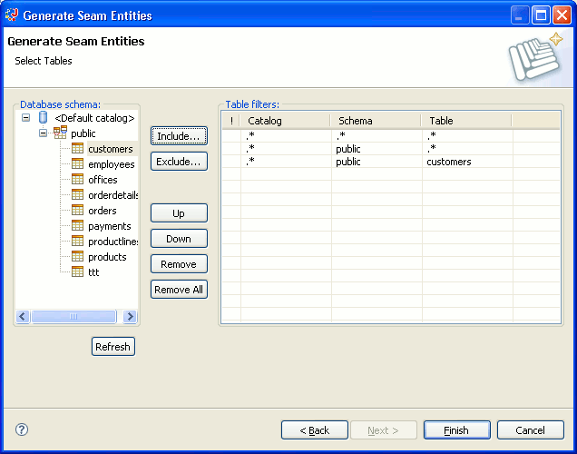
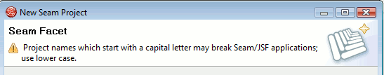

General
Work have been done to make sure this release will work with Seam 2.1 as a Technology Preview; i.e. components.xml editor supports 2.1 schemas.
Generate Entities wizard will only work with Seam 2.1.0.SP1 or use the patch available in the related bug in jira for Seam 2.1.0.GA
Seam 2.0 is no longer a technology preview, it is fully supported.
Previous releases scanned all folders of a project for Seam resources, sometime causing unwanted sideeffects (duplicate components, out of sync resources etc.).
Seam now only scans Java source directories, project classpath and WTP projects WEB-INF directory.
Besides stopping giving bad errors/warnings it should also give a decent speed up for large projects since only a smaller focused set of resources will be scanned.
Wizards
.
Seam Generate Entities now allow you to select which catalog/schemas/tables you want to reverse engineer.

The Seam facet does no longer force creation of EAR, WAR, test, utility project. This means if you use Dynamic Web Project we will now only create a simple War project with Seam support enabled. The Seam Web Project Wizard works like before and should be used if you want the full triage project setup with everything set up from the start.
This also allow you to enable/disable Seam facets on existing projects instead of always having to use the wizard to create a new project.
The Seam wizard now warns if you create a project with first uppercase letter because of a tricky set of bugs in JBoss AS/Seam/JSF could cause deployment to fail.
Editors
.
The pages.xml editor have received a facelift.

Besides the eyecandy the editor now has context menu actions for Go to page and Create file, better auto-layout and inline editing.
JSF code completions are now explicitly ordered by type to give more relevant completions higher priority. The current ordering is below.
- XML/JSP/HTML Tags
- Tag Attributes
- Tag Attribute Values:
- The Tag Name List for the jsfc-attribute
- Predefined Tag Attribute Values
- SEAM EL (Seam Components, Seam Component Properties, Seam Component Methods, Seam Message Components, Seam Message Component Properties, Seam Factories)
- JSF EL (Managed Beans, Managed Bean Properties, Managed Bean Methods, Constants, Resource Bundles, Resource Bundle Properties)
- WTP JSF EL

Seam code completion now also picks up @DataModelSection.

EL validation now adds warnings for unbalanced EL.